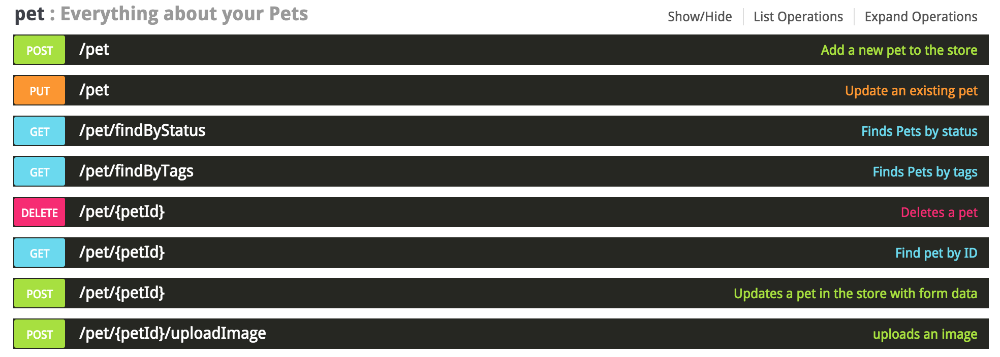
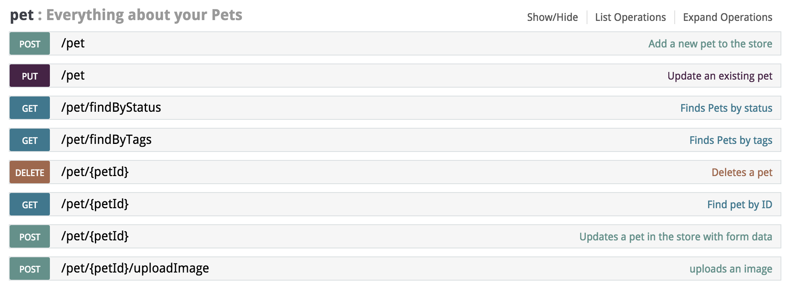
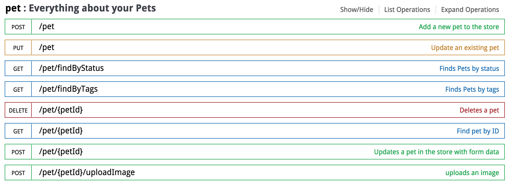

Swagger UI themes is a collection of themes to spice up those default Swagger Docs, ready to be dropped right into any project that needs a new look for your API docs!
7 Themes
In a single collection of themed stylesheets, Swagger UI Themes has a great starting point to choose from to make your API docs stand out!
Free
Swagger UI themes is completely free for commercial use. Swagger UI Themes licensed under MIT License
Open Source
Available and ready for use. Collaborate and improve upon the source code and share the changes within the community.
Download the swagger-ui-themes project and place the desired stylesheet into the source of your swagger-ui html. In the <head> of your html, reference the location to your [theme].css
<link rel="stylesheet" href="path/to/swagger-ui-themes/css/theme-flattop.css" />
Feeling Blue
Decorated with multiple shades of blue.

Flattop
Flat "all the things".

Monokai
There's always atleast one monokai theme, right?

Material
Material design-esque UI.

Muted
Muted color tones for the softer side of things.
Newspaper
Standard black and white theme for simplicity.

Outline
Skeletonized outline of the original theme.
